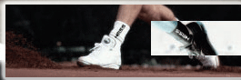

| |
|||||||||
|  | |
||||||||
| |
|||||||||
| |
|||||||||
La Empresa Textil Viso S.A.C. es una empresa que nació en la década de los 90 en la ciudad de Arequipa y que fue concebida desde un principio con el objetivo de confeccionar calcetines de alta calidad, de allí el nombre VISO (sinónimo de calidad). Buscando satisfacer las necesidades de los consumidores de calcetines ya sea de moda casual, deportivo y de vestir que exigen en cada prenda comodidad, calidad y buen gusto. Productos de Alta Calidad con Responsabilidad Social
Nuestra principal actividad es la confección de medias deportivas de algodón para todas las edades, de comprobada aceptación en el mercado nacional, es por ello que actualmente venimos produciendo todos nuestros productos según los requisitos de la NORMA TÉCNICA PERUANA BPMM (Buenas Prácticas de Mercadeo y Manufactura) Versión 01-2004. Del mismo modo venimos desarrollando un programa de COMERCIO JUSTO dirigido por PROMPERU, con el fin de poder adecuarnos a las nuevas tendencias de Comercio Justo, Responsabilidad social y Cuidado Medio Ambiental, como muestra de nuestra preocupación y compromiso con un mundo mejor. Innovación y Desarrollo
Buscando siempre proveer a nuestros clientes de prendas de la más alta calidad con las nuevas tendencias del mercado, es que aprovechando nuestra posición geográfica y venimos desarrollando productos innovadores en 100% fibra de alpaca, mezclas de Alpaca con oveja, alpaca seda y otras, junto a empresas especializadas en este tipo de fibra animal que nos proveen de los materiales más óptimos. Acompañado de diseños con componentes tecnológicos según las nuevas tendencias hacia los deportes de aventura. Dirigido a los mercados estadounidense y europeo en menor escala. Del mismo modo también hemos desarrollado productos en base a algodón ecológico certificado, siguiendo las nuevas tendencias. Moderna Maquinaria
En nuestro proceso productivo, utilizamos maquinaria italiana en diferentes diámetros y galgas que nos permite realizar calcetines en punto liso y rizo vanisado con diseños multicolores, abarcando todas las edades cubriendo así una amplia gama de productos.
|
Nuestra VISIÓN es Ser una empresa reconocida en la producción y comercialización de medias, calcetines y accesorios en el mercado nacional e internacional, enfocados en la calidad, exclusividad y variedad de nuestros productos, con apertura, dinamismo, flexibilidad, compromiso social y medio ambiental. “Siguiendo los lineamientos de nuestros Sistemas de Gestión” (Vigencia: 03 años) POLÍTICA DE CALIDAD Textil VISO S.A.C es una empresa dedicada a la fabricación y comercialización de medias y calcetines de alta calidad. Realizamos nuestras actividades bajo un sistema de procesos orientados a la satisfacción de los clientes y hemos adoptado los siguientes compromisos para el sistema de gestión de la calidad: En Textil VISO S.A.C. emprendemos acciones recurrentes para elevar la calidad de productos y servicios y ponemos a disposición de las partes interesadas pertinentes esta Política de Calidad como muestra de nuestra apertura y garantía de calidad en todo lo hacemos de cara al cliente. POLÍTICA MEDIOAMBIENTAL En Textil Viso S.A.C. nos esforzamos por ser una empresa que respeta al medio ambiente y a la comunidad en la que operamos. Creemos que nuestro compromiso de promover el desarrollo sostenible, maximiza el valor de la empresa, de nuestros proveedores, clientes y de la comunidad. Los principios ambientales que se tienen presentes en la empresa son los siguientes: · Nos comprometemos a cumplir con la legislación y la normativa ambiental aplicable a nuestra organización. · Nos comprometemos a evaluar, prevenir y minimizar el impacto ambiental como consecuencia de nuestro proceso productivo. · Promovemos y priorizamos el uso eficiente de nuestros recursos, energía y agua. · Priorizamos el uso de materia prima e insumos eco-amigables. · Promovemos y ejecutamos hábitos de reciclaje, reutilización y reducción en todo el personal que labora en la empresa. · Promovemos la comunicación digital (correo electrónico) con el fin de minimizar el consumo de papel. Esta política es difundida y aplicada en todos los niveles de la organización. |